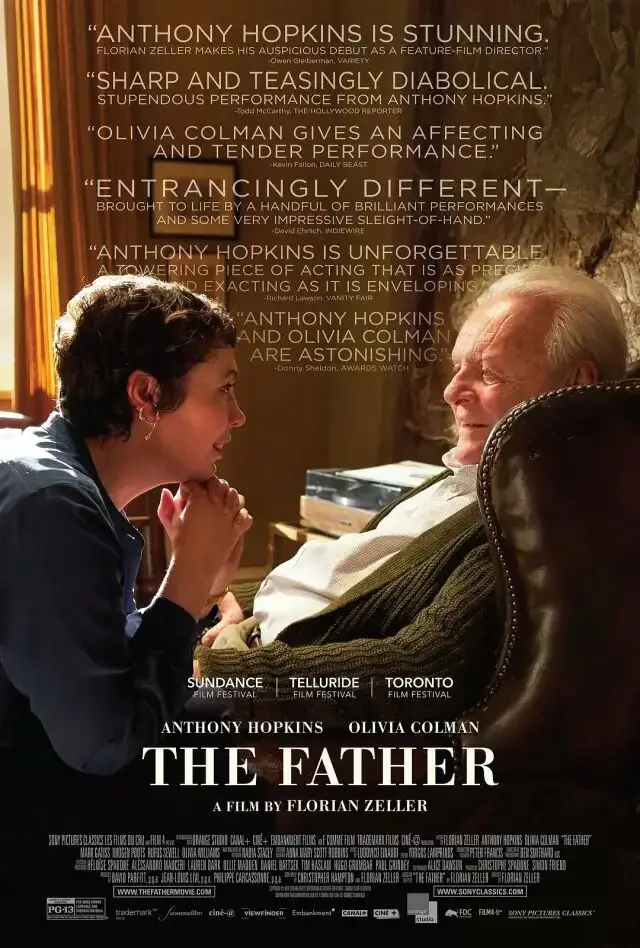
84岁，老人，伦敦，公寓。
老人正戴着耳机，陶醉在古典音乐的世界中。
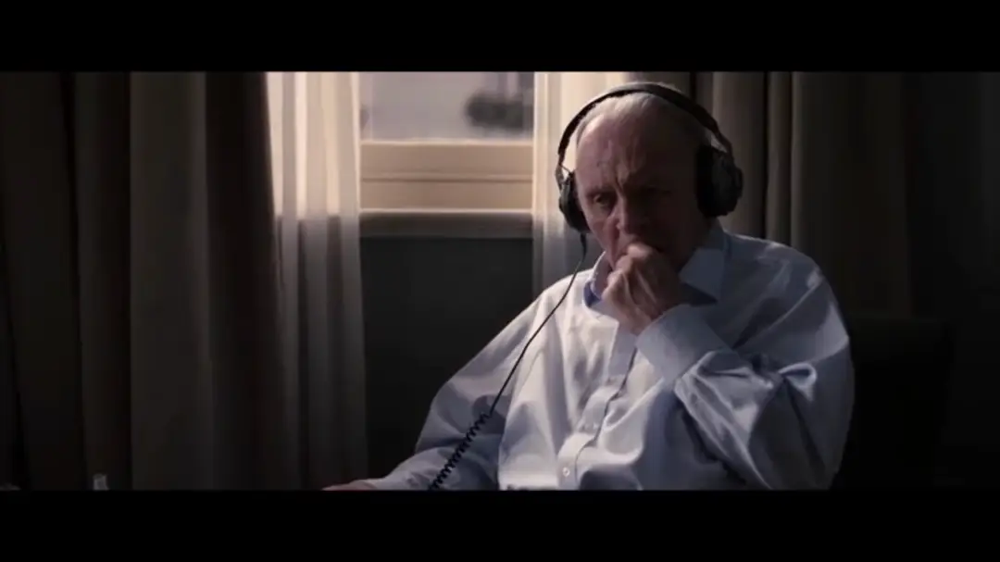
虽然已经一把年纪，但看上去非常有精神。
接着，女儿安妮推门而入，非常委屈地问父亲昨天为什么要把自己请来的护工赶走。
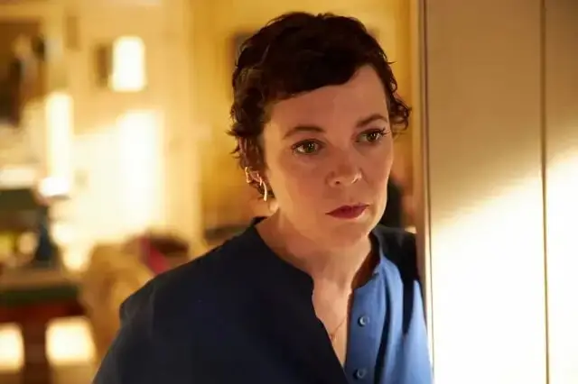
老人告诉安妮，他不需要任何人帮忙！
老人还告诉女儿那个护工行为不端，还偷偷拿自己贵重的手表。
女儿无奈的说，你的手表难道不是藏在浴缸下面的水管里。
老人非常吃惊，“你怎么会知道！“，然后慌忙走向浴室。
没多久，老人便戴着手表出现在女儿的面前。
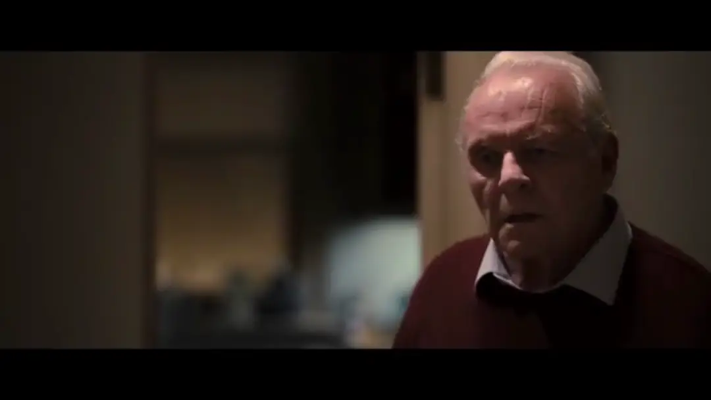
女儿无奈地说，既然手表还在，那你错怪那个护工了，我可以再请她来照顾父亲。
父亲说，幸好他自己机智，早早把手表藏起来了，要不然现在都不知道是几点。
父亲依旧拒绝别人的照顾。
最后，女儿向父亲摊牌，自己将要离开伦敦，去巴黎生活。
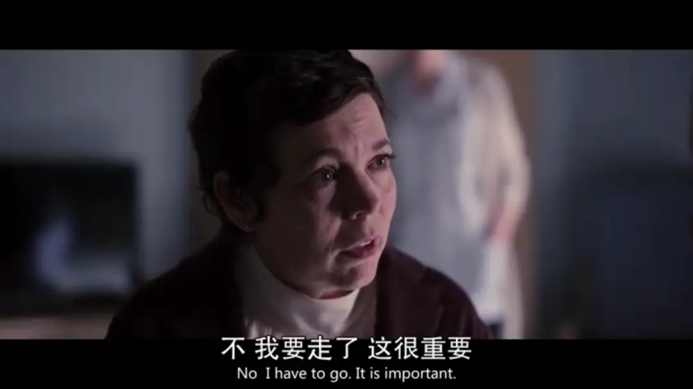
父亲恍然大悟，怪不得女儿急的要请别人来照看自己，原来是想甩手不管自己了。
最终，父女俩不欢而散，女儿出门买菜。
看着女儿远去的背影，老人的心情很复杂。
刚缓过来，一出房间，便发现有个男人站在客厅。
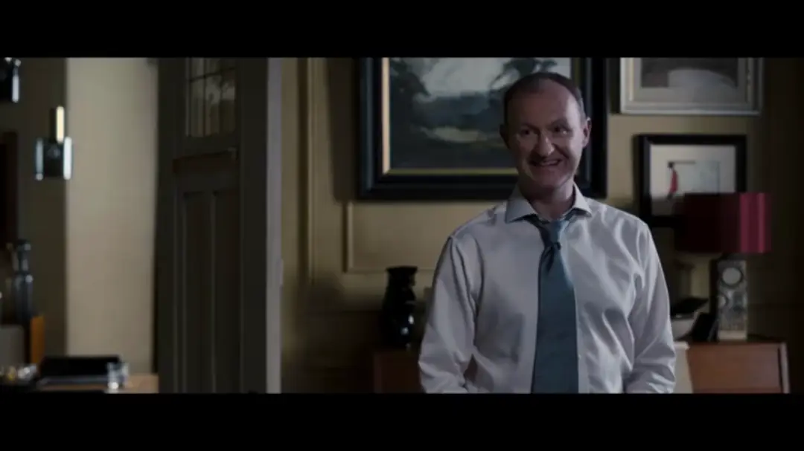
老人问男人为什么在这里。
男人告诉他，因为这是他的家，他叫保罗，是女儿的丈夫。
老人大惑不解，女儿不是要去巴黎么？
男人告诉他，并没有这回事。
老人接着在保罗面前开始吐槽女儿的不是，吐槽女儿这么做就是为了将自己送到养老院。
说着说着，老人变得有些歇斯底里，又忽然语气强硬地向保罗宣告：我绝对不会离开我的公寓！
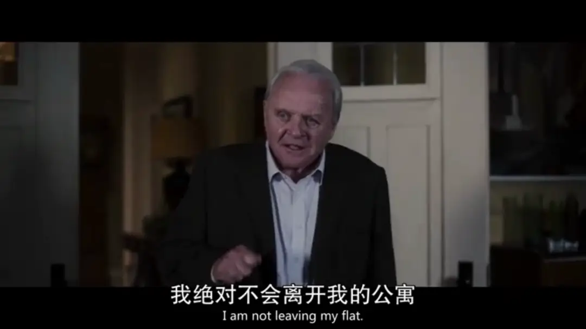
老人的话触怒了保罗，保罗接着告诉老人：这不是你的公寓，你还记得么，你是搬进来暂住的。
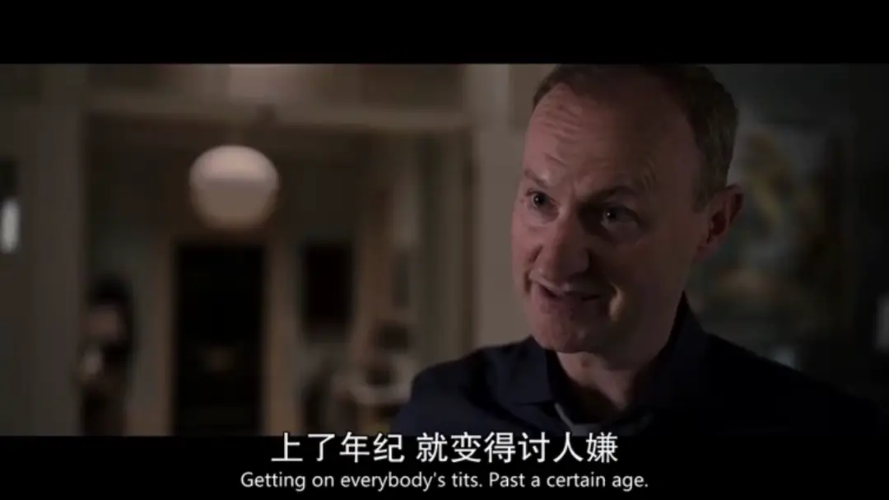
正在两人僵持中，女儿安妮买菜回到家中。
可眼前的安妮却很陌生，和之前和自己吵架的安妮完全不是一个人。
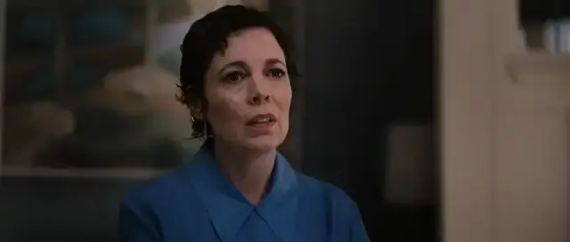
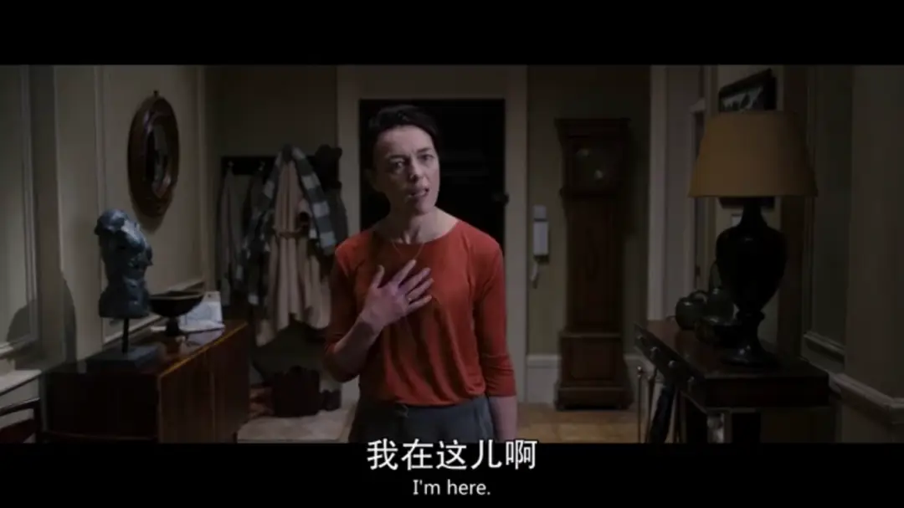
老人陷入到混乱中，可是女人坚称自己便是安妮。
更离奇的是，当老人和女儿吐槽刚才保罗的无理时，安妮说自己并未结婚，自己并不认识什么保罗。
而房间中也确实没有另一个男人。
老人被眼前发生的怪事搞得一头雾水。
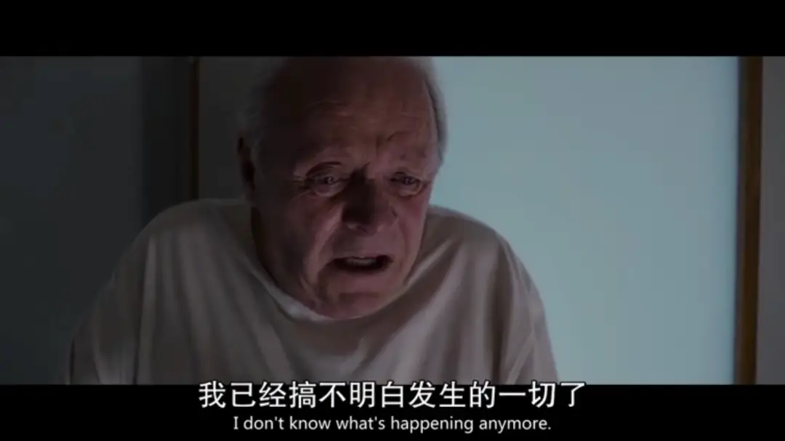
也许是女儿欺负自己老糊涂，想要霸占自己的公寓。
接下来，老人既依恋又很提防地对待自己的女儿。
安妮也为父亲找了另一位护工。
这位护工很讨老人喜欢，因为她长的很像自己的小女儿。
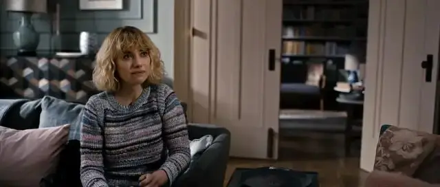
而小女儿是自己最想念的亲人，却因为常年不在家而不能相见。
所以，老人很期待这位新的护工。
可当护工再一次来到公寓时，怪事再一次发生，眼前的护工根本就不是上一次见面的护工......
这便是安东尼·霍普金斯的最新力作《困在时间里的父亲》。
网友称：这是近很多年来我看过的最伟大的表演。
豆瓣评分8.7。
这部作品最近获第93届奥斯卡6项提名，最终评选结果将在4月份揭晓。
被誉为“好莱坞圣经”的北美杂志Variety预测，安东尼·霍普金斯有望时隔30年后再次斩获奥斯卡影帝。
近年来，80多岁的安东尼·霍普金斯非常活跃。
2018年，其主演的《李尔王》获艾美奖提名。
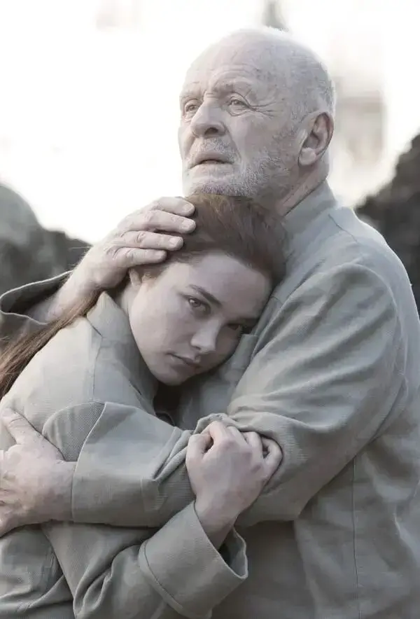
2019年，其主演的《教宗的承继》获第92届奥斯卡三项提名。
每年一部佳作。
耄耋之年的安东尼·霍普金斯简直是开了挂的存在！
-01- 阿兹海默患者
记忆丧失、定向障碍、情绪不稳.....这些是阿兹海默患者的症状。
《困在时间里的父亲》通过老人的第一视角，将这些抽象的词语具象化，带领观众浸入式地感受了阿兹海默患者的痛苦，以及带给身边家人的煎熬。
片中老人小女儿发生意外去世，成为老人终生的心结。
大女儿对自己悉心照顾，但又被自己的脾气和病症折腾的疲惫不堪。
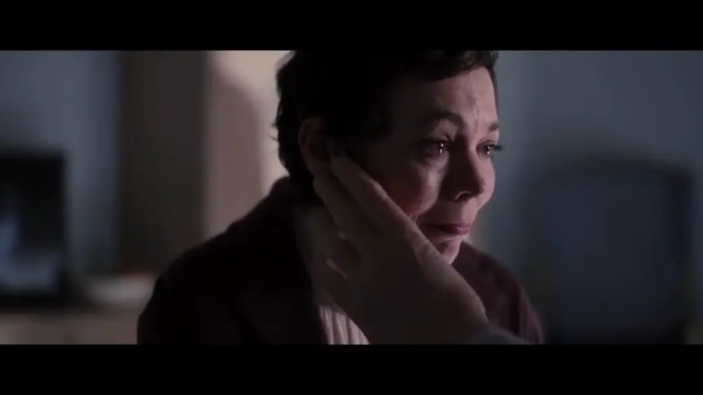
看着大女儿的生活被自己严重影响，老人一边是心疼，另一边又是担心女儿招架不住将自己送进养老院。
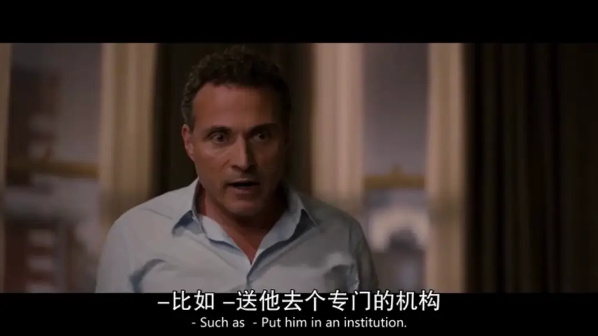
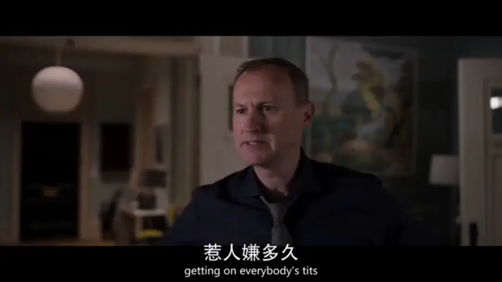
所以，老人敏感、倔强，极富自尊心但又很脆弱。
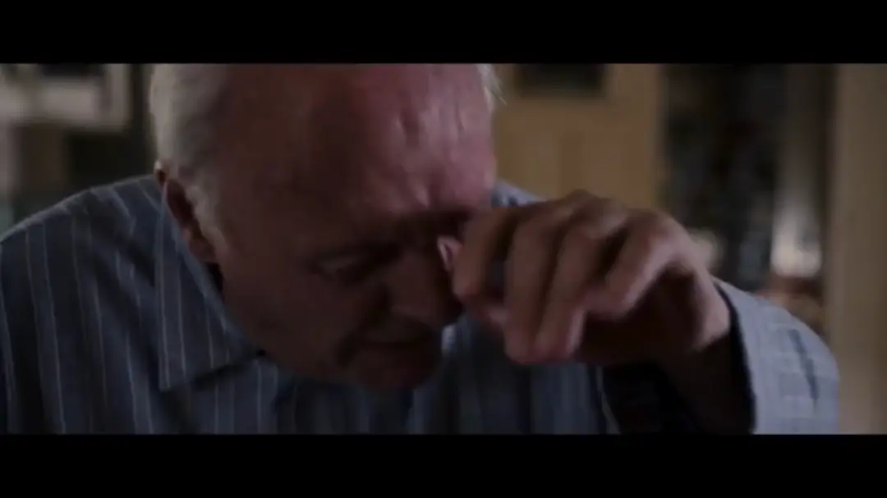
过去的记忆和遗憾，未来的担心和恐惧，都和自己阿兹海默的症状交织在一起。
老人因为自己的状况穿行在公寓、养老院和医院不同的空间里，身边人除了日常陪伴自己的大女儿安妮，内心深处深深思念的小女儿，剩下的便是照看自己的护士。
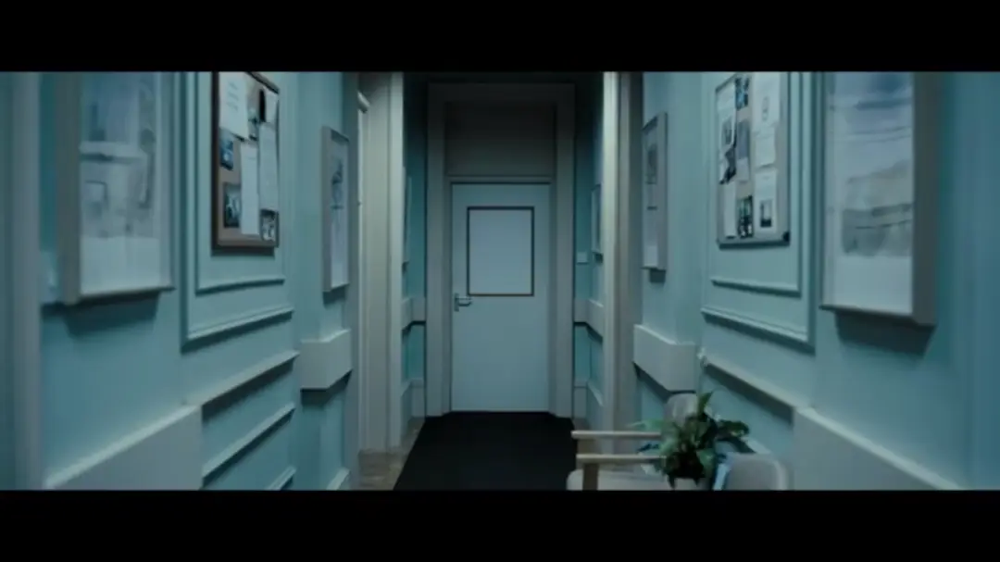
这些场景，这些人，有自己过去所习惯的，有自己一直思念的，也有自己一直抗拒和害怕的。
因此，各种情绪、记忆在病症的扭曲下，老人感知到的空间、时间以及身边人都在发生着奇怪的变化。
这一秒还是躺在自己的房间里，下一秒便发现自己置身于医院中。
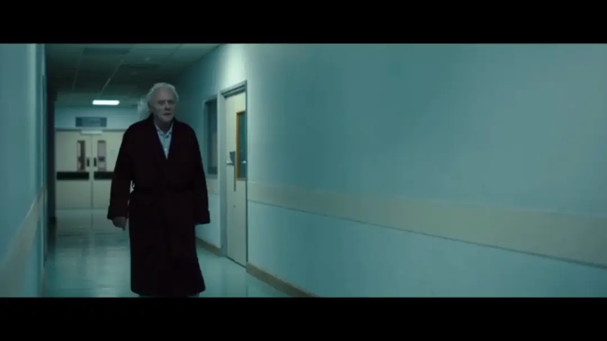
这一刻是始终陪伴自己左右的女儿，下一刻却变成了将自己狠心抛弃的不孝女。
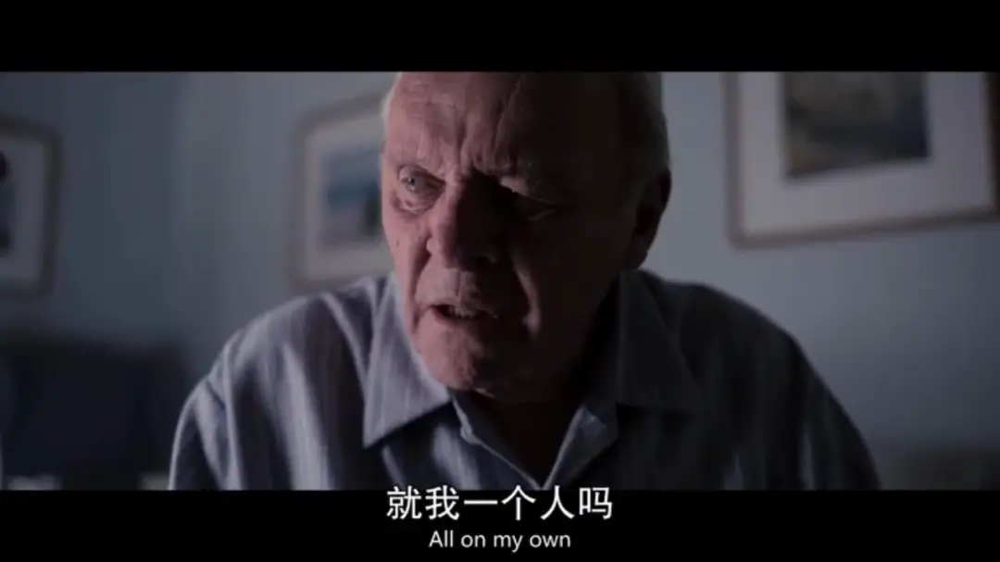
因为担心自己被人嫌弃，他将一名男护士的样貌投射成为别有用心的女婿保罗，甚至在他的时空里，保罗不仅奚落自己遭人烦，还动手打自己。
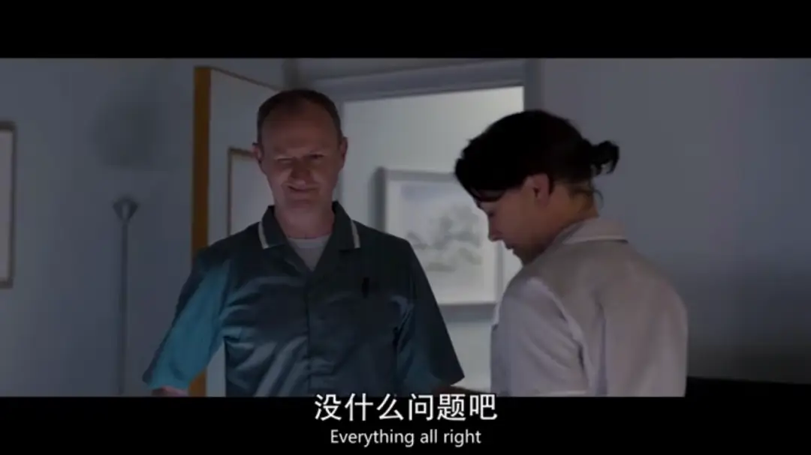
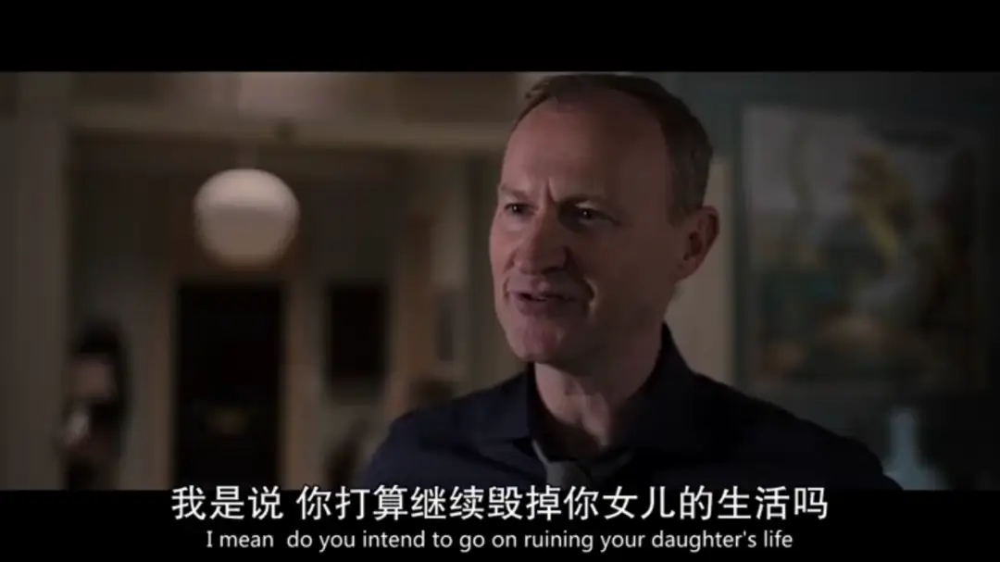
所以，老人忽然失声痛哭，一旁的女儿却不知道发生了什么而手足无措。
因为过于想念自己的小女儿，他的时空中到处是小女儿的痕迹。
比如公寓里到处是女儿的画作。
在他的时空里，小女儿并没有意外去世，而是去远处旅游。
甚至因为思念太深，他将小女儿的样貌投射在一名护工身上，所以，老人才迫不及待地期待这名护工的到来。
而最终到来的护工变成一个陌生人的样貌，是女儿去世悲惨记忆的扭曲投射。
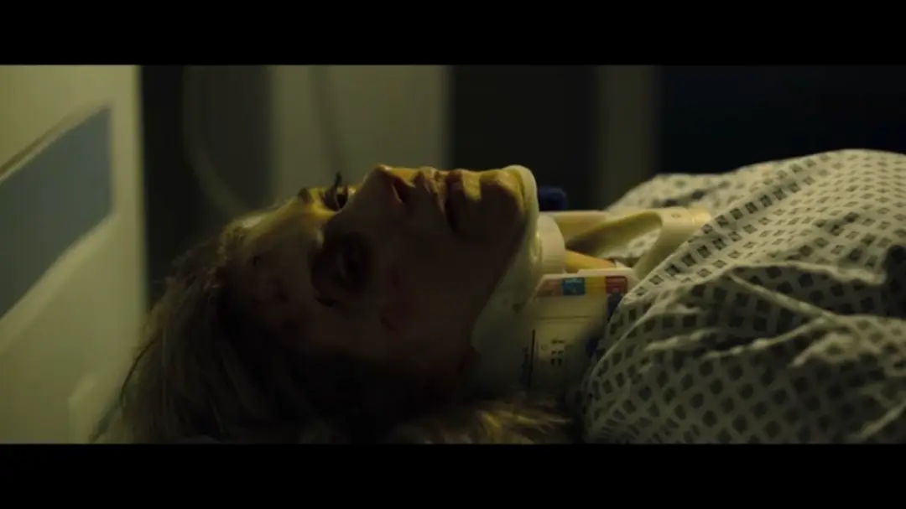
老人正是困在病症的时空里，经历着一次又一次的希望、失落和心痛，所以变得歇斯底里、情绪失控。
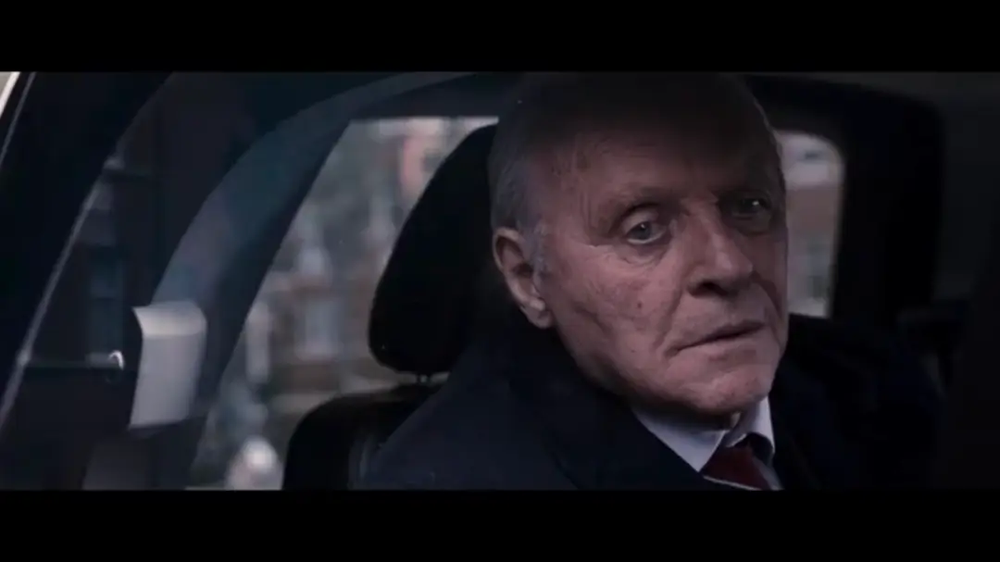
这些难以想象的体验，就这样被这部佳作用丰富的视听语言呈现了出来。
最后，当老人最终发现，现实是自己早已经被女儿送到医院，自己早已经是孤身一人的病患老人时。
老人心痛、孤独到绝望，他一下子变成了一个无助的婴儿，崩溃地哭喊着：我要我的妈妈，我想离开这里。
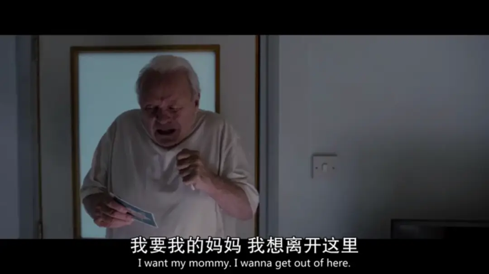
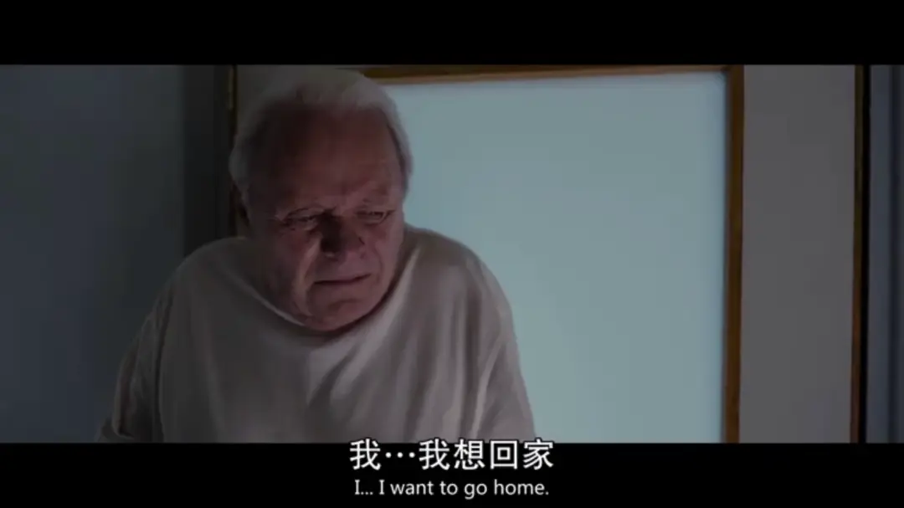
当护士慢慢将他的情绪安稳后，老人无望地说：我感觉好像我的叶子都掉光了，我....再也没有栖身之地了。
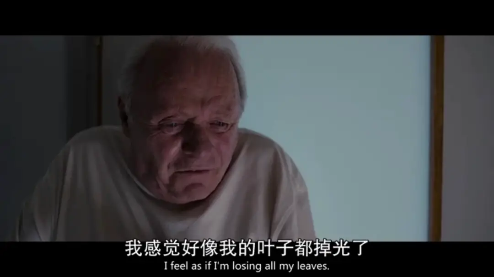
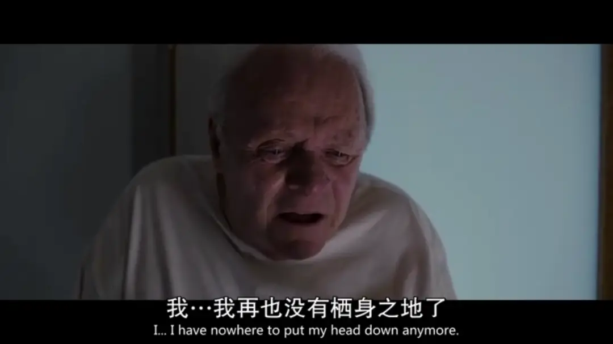
-02- 戏里戏外的父亲
安东尼·霍普金斯表示，《困在时间里的父亲》可能是他迄今为止所出演的80多个影视作品当中最喜欢的角色。
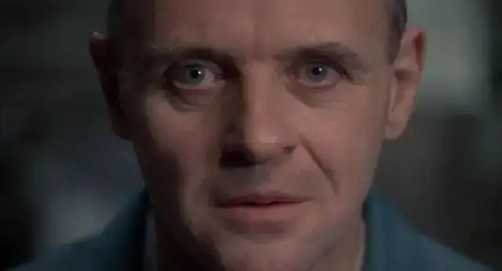
这位演绎过电影史上最令人胆寒的高智商变态的人，将这个父亲角色看为致爱并非没有原因。
因为，艺术来源于生活，现实中除了阿兹海默症，安东尼·霍普金斯就是那位固执、脆弱的父亲。
1967年，安东尼·霍普金斯与自己的第一任妻子结婚，不久他拥有了自己唯一的女儿阿比格尔。
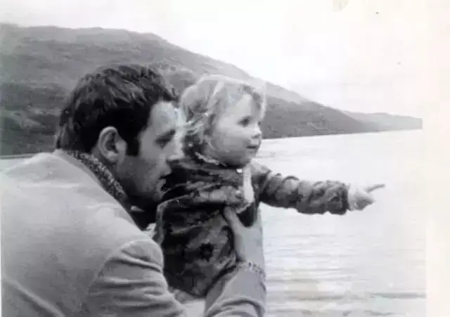
可这段婚姻只维持了五年，之后妻子带着女儿离开了安东尼·霍普金斯。
婚姻遭遇打击，安东尼·霍普金斯陷入到酒精和毒品中。
而阿比格尔更惨，她的童年里，父亲缺位，她也成为了一个问题女孩。
阿比格尔曾经找过自己的父亲，可安东尼·霍普金斯却对她非常冷淡。
再次遭到父亲的拒绝，阿比格尔对父亲非常憎恨，也像自己的父亲一样陷入到酒精和毒品中。
阿比加尔曾说过：“我从小父母离婚，我的童年并不幸福，我差一点儿自杀。”
后来，阿比加尔继承了父亲音乐的天赋，跌跌撞撞长大后成为了一名歌手。
2005年，当阿比加尔举办演唱会的时候，就在一街之隔，安东尼·霍普金斯在举行电影《世上最快的印第安摩托》首映式。
活动结束后，安东尼·霍普金斯悠然回家，丝毫没有去看女儿一眼。
就这样，父女两之间几乎是断交的状态。
作为父亲，安东尼·霍普金斯毫无疑问是失败和冷酷的。
安东尼·霍普金斯对于舆论对他的指责也没有做辩解，他本人也承认自己的冷漠和自私，称自己是：“终其一生都是局外人”。
这种局外人的悲剧不仅体现在他和女儿之前的关系上。
事实上，这可以追溯到安东尼·霍普金斯的童年，他很小被送往寄宿学校，所以从小就与家人疏远，当时在学校还因为脑袋大而遭到同学嘲笑。
所以，从一开始，安东尼·霍普金斯的身上便有一种阴郁孤独的气质，自己总是那个大家所熟悉的陌生人，总是置身于亲密关系之外。
所以，在第一段婚姻后，安东尼·霍普金斯依旧不断经历着感情的破碎。
垂暮之年，安东尼·霍普金斯回首过去，内心非常痛苦，他曾无奈地向上帝叩问：我自己所处的是怎样的地狱，我陷入到巨大的迷失中，当我回望自己过去的人生时我充满了困惑.......全能的上帝，我这是经历了什么样的人生旅程啊。
也正是因为安东尼·霍普金斯的这些经历，他才能够将这部作品中老父亲的固执、脆弱，以及对于女儿的复杂情感演绎的活灵活现。
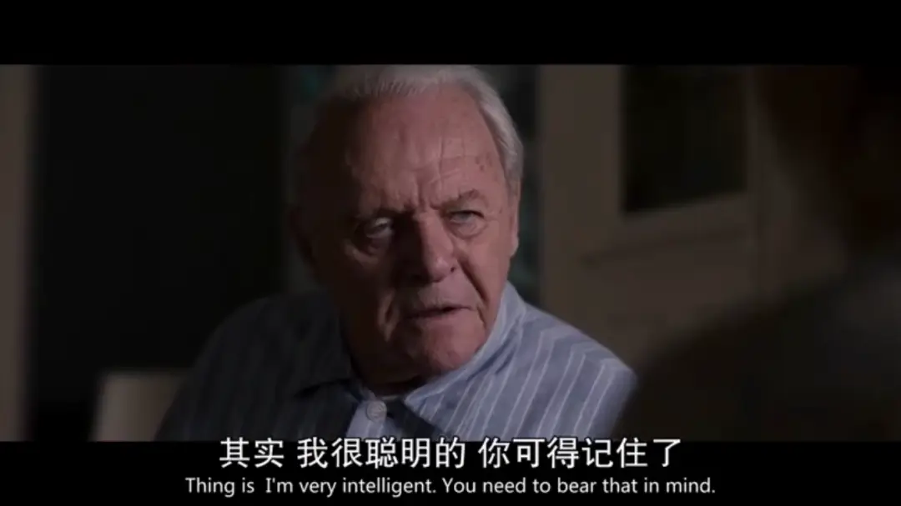
甚至，电影主角的名字也叫安东尼，年龄也是84岁。
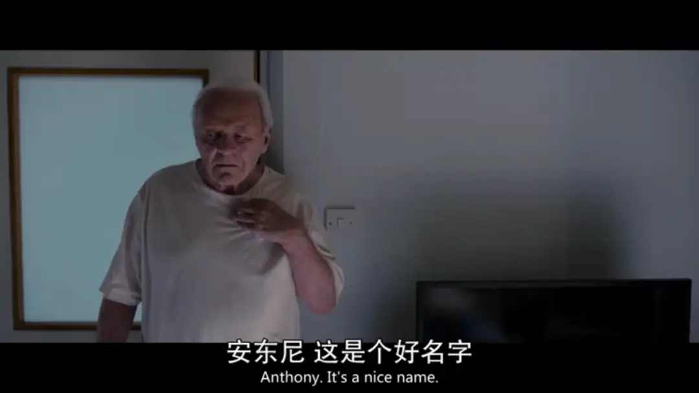
电影最后，安东尼在自知自己的“树叶”已经飘落凋零，自己已是无家可归之人的时候，他困惑地问护士：我到底是谁？
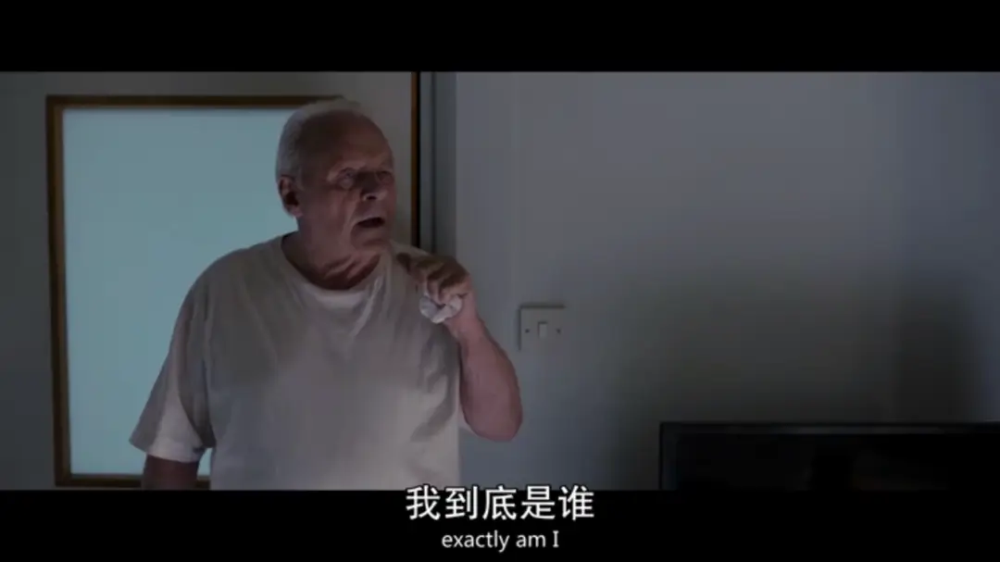
当这个已经被问烂了的“无聊”问题，从这个经历过无限风光和幻灭的老人口中发出时，是充满分量的。
这里面表达着的不仅是安东尼对于自己的困惑和对女儿的亏欠，更表达了人类自诞生以来长久的迷失和脆弱。
无论我们拥有多少，我们依旧不知道自己是谁。
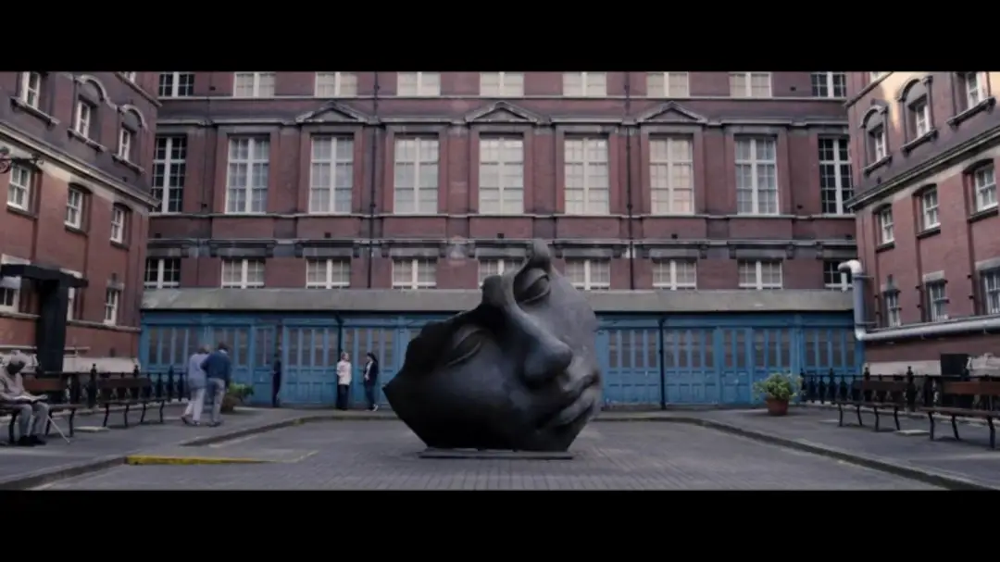
相似推荐
▼
疯子带着瞎子走路，这正是我们时代的病态！
题材敏感，有一百种可能会拍砸，但这部却出奇的好！
这里没有挑逗你眼目情欲的小鲜肉
也没有挑动你肉体情欲的段子
更没有膨胀你今生骄傲的鸡血
我们只在乎那些最质朴真诚的作品
在那里我们才能恢复真正的想象力
我们也坚信这才是我们真正需要的

ID:Six_hundred_hits
长按二维码，一键关注
【六百击】
电影评论
尽情分享朋友圈

微信二维码打赏通道